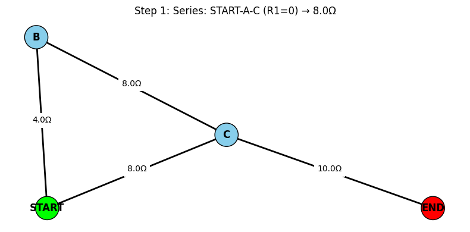
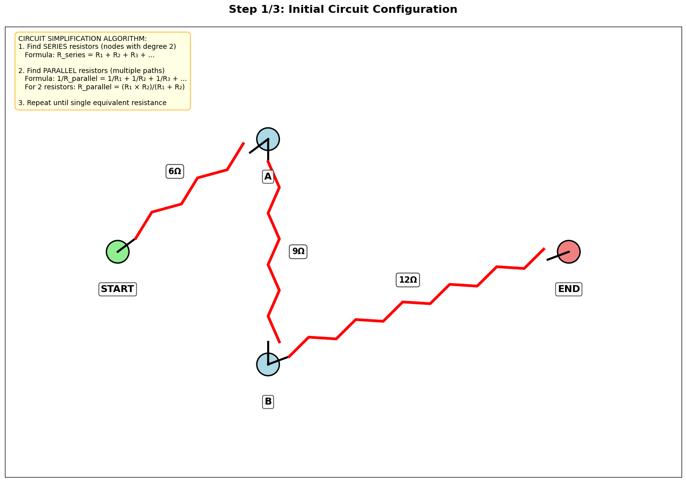
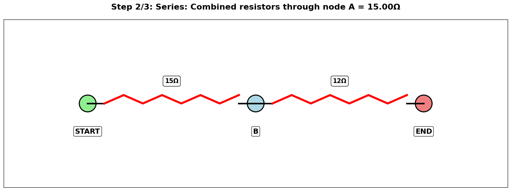
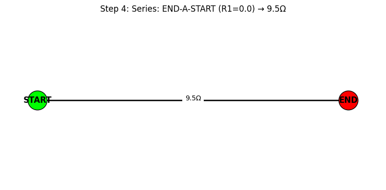
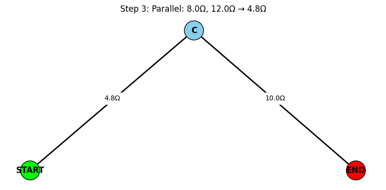
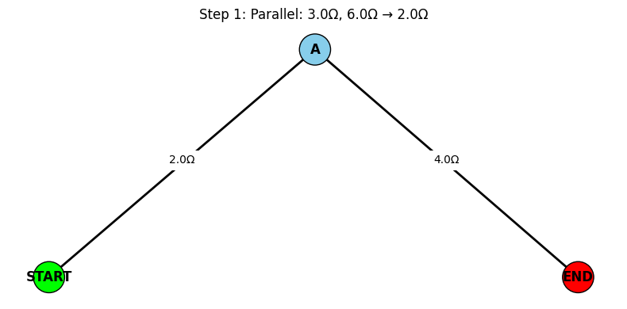
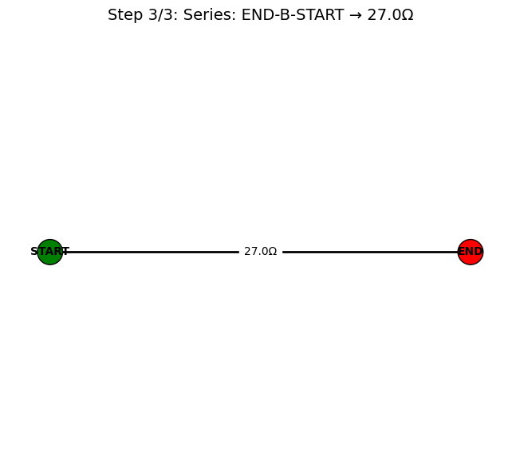

Problem 1
Equivalent Resistance Using Graph Theory
Motivation
Calculating equivalent resistance is a fundamental task in analyzing electrical circuits. Traditional methods rely on applying series and parallel rules repeatedly, which becomes cumbersome for complex networks.
Graph theory provides a structured and scalable approach by modeling circuits as graphs: - Nodes = Junctions - Edges = Resistors, with weights equal to resistance values
This method is not only systematic but also useful for automation and simulations in engineering and computer science.
Definitions
- Graph: A collection of nodes (vertices) and edges (connections), where edges can carry weights.
- Series Connection: Resistors connected end-to-end. The same current flows through each.
- Parallel Connection: Resistors connected across the same two nodes. Voltage across each is the same.
- Equivalent Resistance (\(R_{\text{eq}}\)): The single resistance that can replace a network of resistors between two terminals.
Formulas
-
Ohm’s Law:
$$ V = IR $$ -
Resistors in Series:
$$ R_{\text{eq}} = R_1 + R_2 + \cdots + R_n $$ -
Resistors in Parallel:
$$ \frac{1}{R_{\text{eq}}} = \frac{1}{R_1} + \frac{1}{R_2} + \cdots + \frac{1}{R_n} $$
Algorithm Using Graph Theory
Goal
Reduce a resistor network to a single equivalent resistance between two terminals using graph-based simplification.
Algorithm Steps
- Graph Representation:
- Each junction is a node.
-
Each resistor is an edge with a weight (resistance).
-
Iterative Simplification:
- Detect linear chains and apply series reduction.
-
Detect cycles/branches and apply parallel reduction.
-
Repeat Until:
- The graph is reduced to two nodes (terminals), and one edge (final resistance).
Example 1: Parallel then Series

Example 2:
|  |  |
|---|---|

Example 3:
|  |  |
|---|---|

Efficiency & Improvements
- For arbitrary graphs, use DFS/BFS to detect cycles and paths.
- Edge contractions and custom graph traversal rules improve performance.
- Replace rule-based detection with symbolic solvers or matrix-based solvers for large circuits.